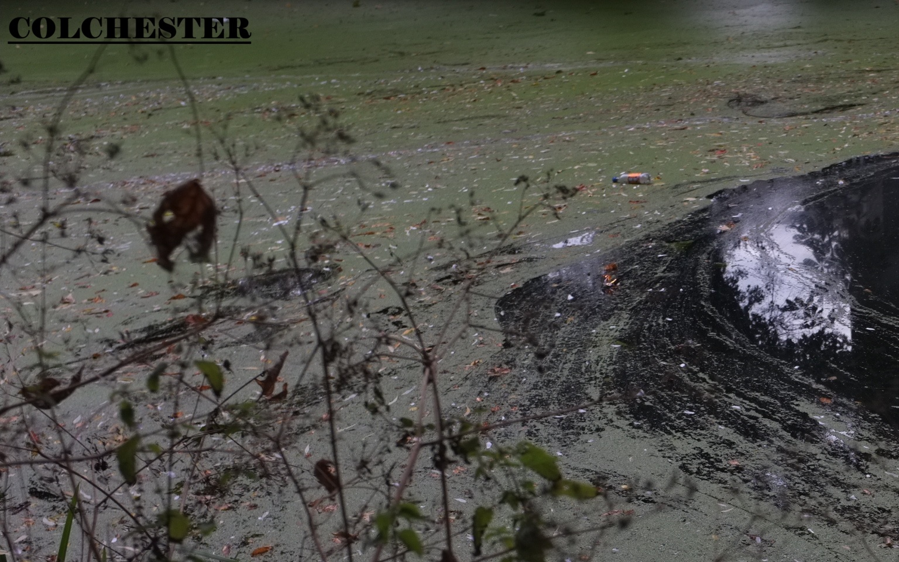
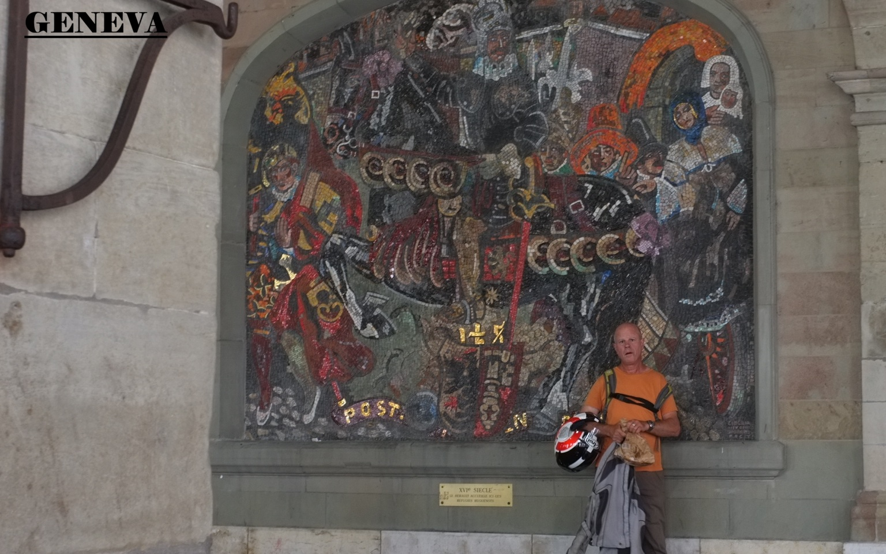
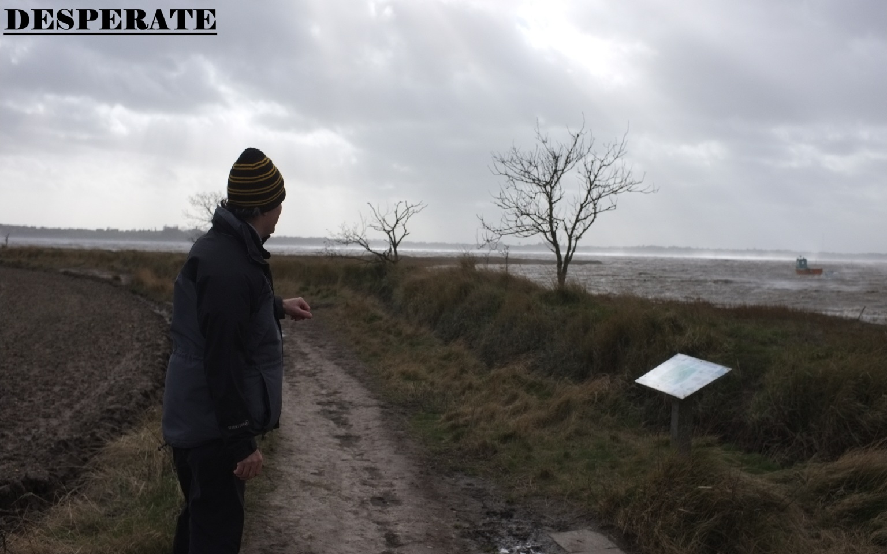

My Photography
This is a culmination of different projects of photos all taken by me. Most of them hold more value to me then they will to you. But ultimately I am doing this for my own peace of mind, photos have always been my way of time stamping emotions or occasions in my life. I hope they reflect those emotions or make you feel something. This is all work in progress and my goal is to eventually have physical media that someone can hold and look through. But making this has been fun, so hopefully more to come. If anyone is a wizzard at css or html dms are open <3
Click through the bellow if your interested:

